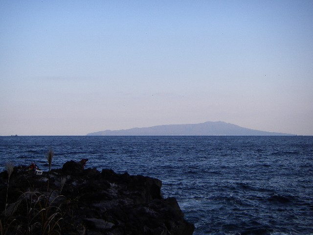

东京
成田落地后入住，东京站、日本桥或京桥附近轻松吃饭散步。
抵达缓冲最新低疲劳路线：10/1 东京落地，10/2—10/4 伊豆，10/4 下午回东京；后半段安排新宿购物，并在镰仓与箱根之间二选一。取消 DisneySea，不再安排舞滨住宿。
查看最新伊豆执行版 · 详细攻略与地图 →
东京落地后先进入伊豆，再回东京收尾；迪士尼取消，箱根与镰仓保留为 10/6 的单日二选一。
成田落地后入住，东京站、日本桥或京桥附近轻松吃饭散步。
抵达缓冲东京直达伊东住两晚，温泉街、大室山、城崎海岸集中完成。
这次旅行主角10/4 下午回东京，10/5 新宿购物，10/6 留出一日游弹性。
少搬行李默认镰仓＋江之岛；天气或偏好变化时换成箱根。
只选一个主要跨城转场集中在 10/2 与 10/4；伊豆住两晚，后半段回东京，不再前往舞滨。
11:45 上海浦东 T1 出发，15:55 抵达成田 T2。入境后前往东京站、日本桥或京桥；晚上只安排附近散步和晚餐。
MU521 · 不赶景点乘踊り子直达伊东，下午安排伊东温泉街、松川沿岸和温泉旅馆。
伊豆入住伊豆高原自然主题日；天气不好时删掉大室山或缩短海岸步道，不硬赶。
伊豆完整日上午伊东慢逛，中午后返回东京；不再搬去舞滨，晚上休息。
唯一一次换酒店伊势丹、高岛屋、Lumine、NEWoMan、电器、药妆和日用品按目标取舍，晚上回东京酒店。
东京城市日只选一个一日游。默认镰仓；更想泡汤和看山湖时改箱根，不建议两地同日。
弹性一日游14:30 羽田 T3 起飞，建议 11:30 左右抵达机场，不安排市区景点。
MU538 · 羽田 T3伊豆得到连续两晚，10/4 回东京后不再跨城搬运，后半段可按天气和体力自由选择。